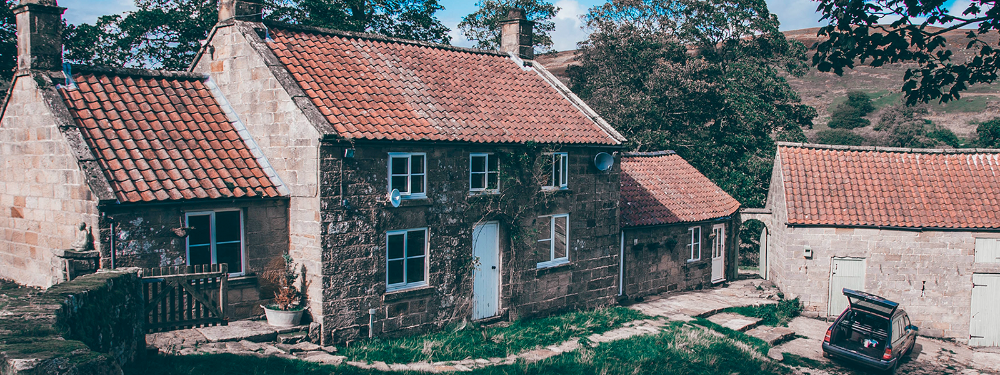
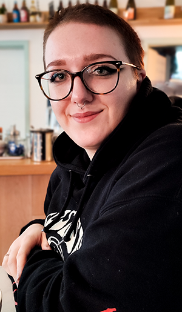

welcome to pfalz-forest.
sinas bed and breakfast with love.


Herzlich Wilkommen in meiner kleinen Hütte
Herzlich willkommen in unserem charmanten Bed and Breakfast! Ich bin die stolze Besitzerin und Gastgeberin, Sina. Seit vielen Jahren betreibe ich diese einladende Unterkunft und es ist mir eine Freude, Gäste aus der ganzen Welt willkommen zu heißen.
Ich habe eine Leidenschaft für Gastfreundschaft und bin stets bemüht, meinen Gästen den bestmöglichen Aufenthalt zu bieten. Mit viel Liebe zum Detail sorge ich dafür, dass die Zimmer sauber und gemütlich sind und dass das Frühstück jeden Morgen frisch zubereitet wird. Ich bin immer gerne bereit, Empfehlungen für Sehenswürdigkeiten, Restaurants und Aktivitäten in der Umgebung zu geben, um sicherzustellen, dass meine Gäste das Beste aus ihrem Aufenthalt herausholen können.
Ich glaube, dass ein Bed and Breakfast nicht nur eine Unterkunft ist, sondern ein Ort, an dem man sich wie zuhause fühlen und eine echte Verbindung zu den Menschen vor Ort aufbauen kann. Ich freue mich darauf, Sie in unserem Bed and Breakfast begrüßen zu dürfen und Ihnen ein unvergessliches Erlebnis zu bieten.
book now